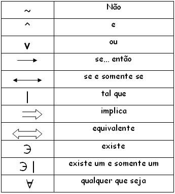

É toda oração com sentido completo, podendo ser classificada como verdadeira (V) ou falsa (F). Os símbolos V ou F são chamados de valores lógicos.
*Princípio da não contradição:
Uma proposição não pode ser verdadeira ou falsa ao mesmo tempo
*Princípio do terceiro excluído:Toda proposição ou é verdadeira ou é falsa, não existe um terceiro valor lógico.
a) 10>5 ( proposição verdadeira)b) 4>8 (proposição falsa)
Uma proposição será simples, quando não contém nenhuma outra proposição ligada a ele.
Ex: o número 5 é impar.
Uma proposição será composta se for formada pela combinação de duas ou mais proposições.
Ex: o número 5 é impar e é inteiro
A partir de uma proposição "p" qualquer, sempre podemos contruir outra denominada negação de "p", indicada com o símbolo "~p".

A partir das proposições dadas podemos construir novas proposições mediante o emprego de dois símbolos lógicos cahmados conectivos.
Utilizando o conectivo "^" entre duas proposições p e q obtemos uma nova proposição, p^q, denominada conjunção das sentenças p e q. Ex:
a) p:3>0 (V)q:2>1 (V)
p^q (3>0)^(2>1) (V)
b) p:8>6 (V)
q:2>5 (F)p^q:(8>6)^(2>5) (F)
c) p:2 é impar (F)
q:10 é múltiplo de 3 (F)p^q: é impar ^ 10 é múltiplo de 3 (F)
Determine se as orações são verdadeiras (V) ou falsas(F)
p:Um triângulo tem 5 lados()q:Um quadrado tem 4 lados()p^q: um triângulo tem 5 lados ^ um quadrado tem 4 lados.()
p:(F)
q:(V)p^q:(F)